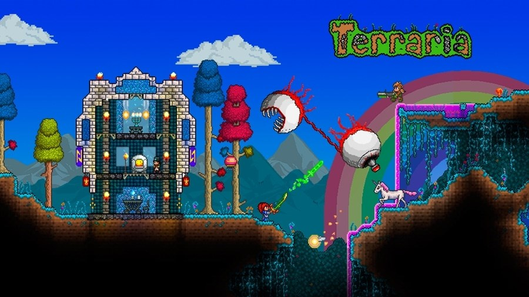

Publishing Info
- Published by: Re-Logic, 505 Games
- Developed by: Re-Logic
- Released: May, 2011
Description
Terraria is a 2D sandbox game with gameplay that revolves around exploration, building, crafting, combat, survival, and mining, playable in both single-player and multiplayer modes across all major platforms. [...]
Game Categories
- Genre: Action
- Perspective: Side view
- Visual: Fixed
- Gameplay: Platform, RPG Elements, Sandbox/Open World
Quote
Though on the surface it looks like just another "me too" indie game seeking to ride the coattails of Minecraft's success, Terraria expands on the familiar sandbox gameplay with a greater emphasis on combat and adventure that proves very satisfying. Fresh elements – like an absurdly expansive weapon crafting system, a broader scope of monsters to battle, and a slick retro 2D presentation – make it a stand out among the pack. Hell, it took all the resolve I could muster just to shut the game down long enough to write this review. That's rare indeed. -- Quote Source (IGN)